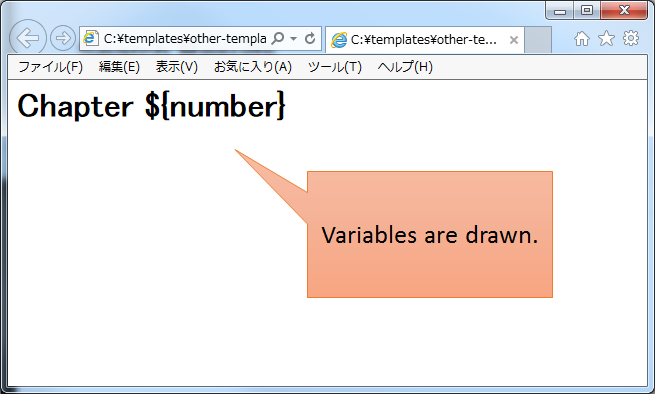
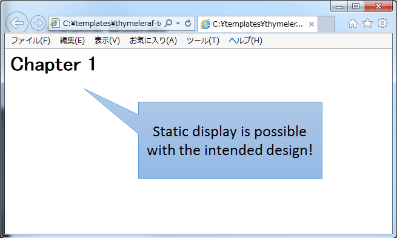

4.1. テンプレートエンジン(Thymeleaf)¶
4.1.1. Overview¶
4.1.1.1. Thymeleafとは¶
4.1.1.1.1. Thymeleafの特性¶
Thymeleafのテンプレートは、ブラウザでの静的描画が可能
既存のテンプレートエンジンと比較してThymeleafの特筆すべき点は、HTMLの文法に則ってテンプレートを書ける仕様となっている事である。この仕様によりThymeleafではテンプレートをHTMLファイルとして作成する事が可能であり、テンプレート自体をWebブラウザで描画する事ができる。（以降、テンプレートファイルをブラウザで直接開く事を静的表示と呼ぶ。）ここで単純なテンプレートファイルをブラウザで静的表示した場合の例を示す。
Thymeleaf以外のテンプレートファイル（JSP、 Apache FreeMarker等）
<!-- ommited --> <h1>Chapter ${number}</h1> <!--/* (1) */--> <!-- ommited -->
項番
説明
テンプレートファイルをブラウザで開いた場合には、テンプレートファイルのロジックが表示されてしまう。

Thymeleafのテンプレートファイル
<!-- ommited --> <h1 th:text="'Chapter ' + ${number}">Chapter 1</h1> <!--/* (1) */--> <!-- ommited -->
項番
説明
テンプレートファイルをブラウザで開いた場合にもテンプレートファイルのロジックは表示されず、<h1>要素に記述したコンテンツが表示される。
 Thymeleafのテンプレートファイルを確認すると分かるが、Thymeleafでは出力内容を変更するために固有の属性を用いている。これはブラウザで表示する際に、ブラウザが解釈出来ない属性が無視される事を前提としている。この仕様により、静的表示の際にThymeleafのテンプレートファイルの実装をブラウザに無視させる事が出来、Thymeleafで動的に変更しないデザインの確認が可能となる。この特性を活かして、Thymeleafを採用した開発では設計工程で作成したHTMLに対してブラウザでデザインの確認をしつつ、動的表示の為のロジックを実装していく事ができる。（以降、画面設計時に作成するHTMLをThymeleafでの呼称に合わせてプロトタイプと呼び、HTML形式のThymeleafテンプレートファイルをテンプレートHTMLと呼ぶこととする。）
{kind=link}
{kind=link}
Thymeleafの実行環境
Thymeleafでは、JSPのようにサーブレットコンテナで提供されるテンプレートエンジンを利用して動作するのではなく、アプリケーションに含まれるThymeleafのテンプレートエンジンがテンプレートHTMLの解釈を行う。このため、アプリケーションサーバごとにテンプレートの解釈が異なり、動作しなくなるといった問題が発生しにくい。ただし、HttpServletRequestなどのサーブレットAPIを利用しているため、アプリケーションサーバごとの挙動の違いを完全に排除することはできない点に注意されたい。
Thymeleafテンプレート
Thymeleafでは、HTML形式でテンプレートファイルを作成できる。ThymeleafのテンプレートHTMLに記述できるHTMLの書式は、HTML5に対応しておりHTML5より追加された属性の解釈が可能である。また、Thymeleafの固有属性をHTML5のカスタムデータ属性として記述する事も可能である。なお、Thymeleafが提供するテンプレートモードを変える事でJAVASCRIPTやCSS用のテンプレートも作成する事が可能である。Note
Thymeleafで選択可能なテンプレートモード
本ガイドラインでは、ThymeleafでHTMLを生成する為のテンプレートモードである”HTML”モードについて記述するが、他にも出力するテンプレートに応じたモードが定義されている。
Thymeleafのテンプレートとして選択可能なテンプレートモードについては、Tutorial: Using Thymeleaf -What kind of templates can Thymeleaf process?-を参照されたい。
4.1.1.2. Thymeleafが提供する基本的な機能¶
Thymeleafのテンプレートファイルを記述する為の基本機能である、Thymeleafスタンダードダイアレクトについて説明する。
4.1.1.2.1. Thymeleafスタンダードダイアレクト¶
構成要素 |
説明 |
例 |
|---|---|---|
属性プロセッサ
|
Thymeleafテンプレート中の要素（タグ）に属性として記述するプロセッサ。
Thymeleafテンプレートを記述する為の基本的な文法であり、開発者は属性プロセッサを介してHTML出力処理を実装する。
|
th:text、 th:if等 |
要素プロセッサ
|
Thymeleafテンプレートに要素（タグ）として記述するプロセッサ。
汎用要素である
<th:block>のみが提供されている。<th:block>は、属性プロセッサを記述する為のHTML文法上の土台として用意されている。<th:block>は、Webブラウザで不明なタグとして扱われる為、HTMLの文法に則った属性プロセッサの使用だけでは実現できない場合に限定的に使用されるべきである |
<th:block> |
属性プロセッサの値に記述する事で、固有の処理を提供する式。
Thymeleafが独自に解釈するトークン及び演算子も提供している。
|
変数式
${}、 メッセージ式 #{}、 リンクURL式 @{}等テキストリテラル、数値リテラル、算術演算子、条件式等
|
|
式オブジェクト
|
1.
#ctx, #local2.
param, session, application3.
#arrays, #strings等 |
Note
インライン処理について
テンプレートHTMLでは、多くの場合属性プロセッサに式を記述してHTML生成処理を実装する。その一方で、インライン処理機能が用意されており、属性プロセッサを介さずに要素内のコンテンツを動的に変更する事が可能である。
ただし、静的表示した場合にインライン処理の記述がブラウザに表示される為、ブラウザで静的表示が可能であるThymeleafの利点を損なう事となる。そのため、本ガイドラインではHTMLにおけるインライン処理機能の利用を推奨しない。
なお、JavaScriptのテンプレートを記述するにはインライン処理が必須でありブラウザでの静的表示にも対応されている為、JavaScriptのテンプレート化では、インライン処理を利用している。
Note
th:remove属性について
テンプレートHTMLでは、多くの場合属性プロセッサに式を記述してHTML生成処理を実装する。
その為、属性プロセッサを記述する目的だけのためにデザイン上不要なHTML要素が必要となるケースがある。
またプロトタイプにおいてダミーデータを表示する為の記述についても、Thymeleafによるテンプレート解釈時に削除したいケースがある。
これらのような場合にth:remove属性を用いて、不要なHTML要素やコンテンツを削除する事ができる。
th:remove属性は、属性値に削除する範囲を設定でき動的処理時に柔軟に削除範囲を決める事が可能である。
th:remove属性の詳細については、Tutorial: Using Thymeleaf -Removing template fragments-を参照されたい。
4.1.1.3. Thymeleaf + Spring¶
4.1.1.3.1. Thymeleaf + Springを適用した処理フロー¶
{kind=link}
項番 |
説明 |
|---|---|
(1)
|
DispatcherServletが、リクエストを受け取る。 |
(2)
|
DispatcherServletは、ビュー名に対応するViewの解決をViewResolverに委譲する。 |
(3)
|
DispatcherServletは、返却されたViewにレンダリング処理を委譲する。 |
(4)
|
Viewは、TemplateEngineにレンダリング処理を委譲する。 |
(5)
|
TemplateEngineは、TemplateManagerにレンダリング処理を委譲し、処理結果のレスポンスをコミットする。 |
(6)
|
TemplateManagerは、テンプレートがキャッシュされていない場合はTemplateResolverにテンプレートファイルのロード処理を委譲する。 |
(7)
|
TemplateManagerは、パース済みのテンプレートをキャッシュする。 |
(8)
|
TemplateManagerは、TemplateHandlerにレンダリング処理を委譲する。 |
(9)
|
Viewは、Thymeleafのレンダリング処理結果を返却する。 |
4.1.1.3.2. Thymeleaf + Springの機能¶
Springスタンダードダイアレクト
Thymeleaf + Springを利用する場合、Springスタンダードダイアレクトを用いてテンプレートを記述できる。Springスタンダードダイアレクトは、Thymeleafスタンダードダイアレクトを拡張した機能群であり、Spring MVCと連携する為の属性プロセッサの拡張と新規追加、及び新たな式オブジェクトを提供している。追加された機能はHTMLモードに特化しており、Spring MVCのタグライブラリで実現する機能やEL関数を補完する機能を提供している。追加された属性プロセッサの内、最も特徴的なのはth:field属性でinput要素のtype属性値毎に出力結果を変える。これにより、Spring Framework JSP Form Tag Libraryが提供する<form:input>や<form:select>、<form:checkbox>等の機能をカバーしている。また<form:errors>の代替機能を実現するth:errors属性、th:errorClass属性も提供されており、Spring MVCの利点を享受できるように設計されている。
その他機能
Thymeleaf + Springを適用する場合、Thymeleaf単体で利用する場合とは以下の点で異なる。
式言語として、OGNL(Object Graph Navigation Language)の代わりにSpEL(Spring Expression Language)を利用する。
メッセージリソースとして、SpringのMessageSourceを利用する。
Thymeleafが提供するフォーマット機能の代わりに、SpringのConversionサービスを利用する。Tutorial: Thymeleaf + Spring -The Conversion Service-を参照されたい。
4.1.1.4. Thymeleafテンプレートの実装¶
4.1.1.4.1. テンプレートHTMLの実装¶
{kind=link}
検索画面
HTML
<html> <head> <link rel="stylesheet" href="../../../resources/app/css/styles.css"> <title>Search Screen</title> </head> <body> <h1>Search Screen</h1> <form id="searchForm" action="searchResult.html"> <!-- (1) --> <label>fruits name:</label> <input type="text" name="fruitsName"> <button>Search</button> </form> </body> </html>
項番
説明
(1)テキスト入力要素を1つ保持する、単純な<form>要素のみを定義している。action属性には、検索結果画面のHTMLファイルへの静的リンクを記述している。テンプレートHTML
<html xmlns:th="http://www.thymeleaf.org"> <!--/* (1) */--> <head> <link rel="stylesheet" href="../../../resources/app/css/styles.css" th:href="@{/resources/app/css/styles.css}"> <!--/* (2) */--> <title>Search Screen</title> </head> <body> <h1>Search Screen</h1> <form id="searchForm" action="searchResult.html" th:action="@{/searchResult}" th:object="${searchForm}"> <!--/* (3)、(4) */--> <label>fruits name:</label> <input type="text" th:field="*{fruitsName}"> <!--/* (5) */--> <button>Search</button> </form> </body> </html>
項番
説明
(1)xmlns宣言を追加し、プロセッサに付与する名前空間（”th”）を定義する。この定義は無くても構わないが、定義が無い場合Eclipse等のIDEによるHTML構文バリデーションで警告される為、記述する事を推奨する。(2)<link>要素にth:href属性を追加する。th:href属性のようにHTMLの属性に”th:”を付加した属性プロセッサは、テンプレートの解釈時に対象のHTML属性値を上書きする。th:href属性値には、リンクURL式@{}を用いている。リンクURL式は、指定されたパスにWebアプリケーションのコンテキストパスを付加した値を生成する。(3)<form>要素にth:action属性を追加する。th:action属性値には、リンクURL式@{}を用いている。(4)<form>要素にth:object属性を追加し、<form>要素内からアクセスするプロパティを格納したオブジェクトを指定する。th:object属性値には、変数式${}を用いThymeleafのコンテキストに格納したオブジェクトを参照する。変数式中の記述は、SpELによって処理される。(5)<input>要素にth:field属性を追加し、サーバサイドで保持されているデータが有る場合に出力する。th:field属性値を<input>要素に適用すると、id属性、name属性、value属性が付加される。th:field属性値には選択変数式*{}を用い、th:object属性で指定したオブジェクトのプロパティを参照している。これは変数式を利用し、${searchForm.fruitsName}と実装した場合と同様の結果を得る。選択変数式中の記述も変数式と同様にSpELによって処理される。検索結果画面
HTML
<html> <head> <link rel="stylesheet" href="../../../resources/app/css/styles.css"> <title>Search Result Screen</title> </head> <body> <h1>Search Result</h1> <!-- (1) --> <table> <thead> <tr> <th>name</th> <th>price</th> </tr> </thead> <tbody> <tr> <td>Apple</td> <td>300</td> </tr> <tr> <td>Apple Juice</td> <td>100</td> </tr> <tr> <td>Apple Pie</td> <td>500</td> </tr> </tbody> </table> <a href="search.html">Back</a> <!-- (2) --> </body> </html>
項番
説明
(1)name、 priceヘッダを持ったn行×2列のテーブルを定義する。ここでは3行分のデータを記述している。(2)<a>要素のhref属性には、検索画面のHTMLファイルへの静的リンクを記述している。テンプレートHTML
<html xmlns:th="http://www.thymeleaf.org"> <!--/* (1) */--> <head> <link rel="stylesheet" href="../../../resources/app/css/styles.css" th:href="@{/resources/app/css/styles.css}"> <!--/* (2) */--> <title>Search Result Screen</title> </head> <body> <h1>Search Result</h1> <table> <thead> <tr> <th>name</th> <th>price</th> </tr> </thead> <tbody> <tr th:each="item : ${items}"> <!--/* (3) */--> <td th:text="${item.name}">Apple</td> <!--/* (4) */--> <td th:text="${item.price}">300</td> <!--/* (4) */--> </tr> <!--/* (5) */--> <!--/* --> <tr> <td>Apple Juice</td> <td>100</td> </tr> <tr> <td>Apple Pie</td> <td>500</td> </tr> <!-- */--> </tbody> </table> <a href="search.html" th:href="@{/search}">Back</a> <!--/* (6) */--> </body> </html>
項番
説明
(1)xmlns宣言を追加し、プロセッサに付与する名前空間（”th”）を定義する。(2)<link>要素にth:href属性を追加する。th:href属性値には、リンクURL式@{}を用いている。(3)<tr>要素にth:each属性を追加し、テーブルの<tr>要素及び配下の子要素を繰り返し出力している。th:each属性では、変数式を用いitemsリストを参照し、リスト内のオブジェクトをitem変数に格納している。(4)th:text属性値には変数式を用い、th:each属性で定義したitem変数のnameフィールド、priceフィールドを参照している。th:text属性は、記述した要素のコンテンツを属性値で上書きする。(5)Thymeleafのパーサーレベルコメントブロックを用いて、静的表示の為に記述したテーブル内の要素をThymeleafによるテンプレート解釈時に削除するようにしている。コメントブロックについては、後述するコメント文の「2. Thymeleafパーサーレベルコメントブロック」を参照されたい。(6)<a>要素にth:href属性を追加する。th:href属性値には、リンクURL式@{}を用いている。
Warning
SpEL評価時におけるnull-safetyの影響について
前述のとおり、Thymeleaf + Springでは式言語としてSpELを利用する。
Spring 5から、SpringのコアAPIにnull-safetyの機能が取り入れられており、SpELが解釈される際の
nullに対する動作も変更(SPR-15540)されている。例えば
Map型プロパティのキーとして記述したSpELがnullとして評価された場合、Spring 4以前ではそのままMapにnullが渡され該当する値がないためnullが返却されていたが、Spring 5以降ではキーとなるSpELを評価した結果に対するnullチェックが追加されており、nullの場合はIllegalStateExceptionが発生する。このため、キーとする値に対して事前に
nullチェックを行うなど、nullを考慮した実装が必要となる。以下に
Mapの値を画面に表示する実装例を示す。<tr> <th>Product Name</th> <td><span id="productName" th:text="${productId} != null ? ${productMap.get(productId)}"></span></td> <!--/* (1) */--> </tr>
productIdの値がnullでない場合のみ、対応するMapの値を表示する。Note
テンプレートHTMLのデバッグについて
テンプレートHTMLをThymeleafで処理する際には、テンプレートの実装の不備による例外が発生する事がある。
テンプレートHTMLに記載された
th:textなどのプロセッサの処理に問題があった場合には、org.thymeleaf.exceptions.TemplateProcessingExceptionにテンプレート名と例外発生個所（行、列番号）が示されるため、ログに出力されたこの情報を元にテンプレートの不備の特定が可能となっている。以下に出力されるログの例を示す。
テンプレートHTMLで存在しないプロパティ・フィールドを指定した場合
テンプレートHTMLで参照するオブジェクトに存在しないプロパティやフィールドを指定した場合には、以下のようなエラーログが出力される。
date:yyyy-mm-dd level:ERROR logger:o.t.gfw.common.exception.ExceptionLogger message:[e.xx.fw.9001] Request processing failed; nested exception is org.thymeleaf.exceptions.TemplateProcessingException: Exception evaluating SpringEL expression: "customer.birthDay" (template: "customer/list" - line 6, col 7) (ommited) Caused by: org.thymeleaf.exceptions.TemplateProcessingException: Exception evaluating SpringEL expression: "customer.birthDay" (template: "customer/list" - line 6, col 7) (ommited) Caused by: org.springframework.expression.spel.SpelEvaluationException: EL1008E: Property or field 'birthDay' cannot be found on object of type 'com.example.xxxxx.domain.model.CustomerBean' - maybe not public or not valid? (ommited)このログより、テンプレート名が
"customer/list"の6行、7列目に書かれた"customer.birthDay"のbirthDayプロパティについて対象のクラス(当例ではCustomerBean)から参照出来ない為、例外が発生している事が分かる。テンプレートHTMLで参照するプロパティ値が
nullだった場合Controller等での設定漏れや画面での表示条件の不整合によりテンプレートHTMLで参照するプロパティ値がnullだった場合の挙動は、参照元のプロセッサや式オブジェクトによって異なるが、例外が発生しない場合は開発時に不具合の発見が遅れる恐れがある為、注意が必要である。特に変数式や選択変数式でnull値を参照し出力時に文字列連結をした場合には”null”文字列として扱われ、文字列連結しない場合では、空文字として扱われる挙動の差がある。代表的な例について以下に記述があるため参照されたい。
リクエストURLを生成するのNote パスの一部に変数を埋め込む際の注意点について
文字列を組み立てるのNote 文字列を結合する際の注意点について
Note
テンプレートHTMLの実装において静的表示を意識すべきかについて
Thymeleafの最も大きな特徴であり魅力であるのが、テンプレートファイルが静的表示可能な事である。この特徴は、設計時に作成したプロトタイプを元にブラウザでデザインを確認しつつ、サーバ上で動的にHTMLを生成する機能を組み込む事を可能とする。新規に画面テンプレートを作成する際にサーバ側のプログラムを実装する必要なくデザインが確認できるのは、他のテンプレートエンジンには無い優れた点である。
また、開発途中にデザインの変更が生じた場合もHTMLテンプレートを修正すれば良いため、他テンプレートエンジンでの開発のようなプロトタイプとテンプレートの二重管理が不要となる。一方で、当機能の副作用についても考慮しておく必要がある。
新規開発時のUI開発の効率化や管理対象資材の削減による利点は先に述べたとおりで否定のしようがないが、エンタープライズ系のシステムでは5～10年（或いはそれ以上）システムを運用する事は当然であり、その間に機能追加による改修を複数回行う。
このようなシステムに対して、静的表示可能なテンプレートを採用した場合に考慮すべき点を挙げる。
ソースコードの可読性
静的表示が可能なテンプレートHTMLには、商用環境におけるHTML生成後には読み込まれないCSSや遷移する事のない画面へのリンク、削除される要素等の無駄なコンテンツが含まれる。
画面の複雑度が低い場合は気にならないが、複雑度が高くなるほど静的表示用の記述も増える為、テンプレート中に本質的には不要な実装が増えていく。
また、静的表示用の記述と動的に解釈させる記述に明確な境界が無い為、実装を読み解かない限りはいずれの為の記述なのかは判断出来ない。
これらの要因により、静的表示用の実装が無い場合と比較してソースコードの可読性が下がり、メンテナンスコストが高くなる恐れが有る。
メンテナンスに伴うデグレードのリスク
静的表示用の記述の修正によりテンプレートにバグを埋め込む可能性があり、逆にテンプレートの修正により静的表示を損なう可能性もあり、両者の品質を確保し続けるには高いスキルと冗長なコストが必要とされる。
また、エンタープライズ向けのシステムでは一度リリースしたソースコードを修正するハードルが高く、静的表示のみの修正のために十分なテストを行ないリリースするコストを避ける為、テンプレートHTMLとプロトタイプの二重管理が発生する危険性も否定できない。
これらの品質・コスト面でのリスクを許容してプロトタイプをメンテナンスし続けるかどうかは、慎重に判断する必要がある。
テンプレートファイルに静的表示用の実装を含める事については、ソースコードの可読性を損ない技術的な負債を作らないか、プロジェクトで採用する開発プロセスと合致するか、どのように品質を保持していくのか等を勘案のうえ決定するべきである。
また、静的表示可能なテンプレートを採用する場合においては、後述するコメント文の機能を用い静的表示部と動的にHTMLを生成させるための処理を可能な限り分ける検討をすること。
4.1.1.4.3. テンプレートHTMLからのテンプレートロジックの分離¶
TemplateResolverの設定を変更するだけで有効にすることが可能である。Note
Decoupled Template Logicを有効にした場合でも、HTML（プロトタイプ）にテンプレートロジックを含めることは可能である。
また、HTML（プロトタイプ）の対となるテンプレートロジックのファイルが存在しなくてもエラーとはならず、その場合はHTML（プロトタイプ）のみで処理される。
このため、Decoupled Template Logicを適用した資材と適用していない資材を混在させることも可能ではあるが、開発者の混乱を招くので避けるべきである。
id属性、class属性などを指定できるほか、HTML（プロトタイプ）のタグにth:ref属性を付与してそれを参照することもできる。Note
th:ref属性について
セレクタの記述方法としてタグ構造に依存した記述をするとデザインの変更に弱くなる。
しかし、要素を特定するために
id属性やclass属性を多数付与するとHTML（プロトタイプ）の可読性やメンテナンス性が低下する。これを解決するために、HTML（プロトタイプ）に要素を特定するためのアンカーとして
th:ref属性を付与することができる。ただし、
th:ref属性を使用した場合、HTML（プロトタイプ）にもThymeleafの属性を記述することになるという点に留意する必要がある。ロジックXMLにセレクタを記述しHTML（プロトタイプ）の要素を特定するか、HTML（プロトタイプ）に
th:ref属性を記述し要素を特定するかは、アーキテクトがプロジェクトの開発プロセスを考慮して選択されたい。なお、本ガイドラインでは
th:ref属性を使用せず、ロジックXMLにセレクタを記述しHTML（プロトタイプ）の要素を特定する実装例を紹介する。
th:ref属性の詳細についてはTutorial: Using Thymeleaf -The th:ref attribute-を参照されたい。
Decoupled Template Logic適用のメリットとデメリットは、以下の通りである。
メリット
- テンプレートHTMLからテンプレートロジックが独立することにより、HTML（プロトタイプ）単体での変更が容易になり、画面デザインという視点においてメンテナンス性が高いといえる。
- 画面のデザインとテンプレートロジックの作成作業を分離できる。
デメリット
- HTML（プロトタイプ）上のタグに直接テンプレートロジックを記述するのに比べてコードが冗長になり、コード記述量が増加する。
- 1つの画面に対してHTML（プロトタイプ）とロジックXMLの2ファイルを作成することになるため、管理対象資材が倍になり資材管理コストが増加する。
- EclipseなどのIDEによるThymeleafのコードアシストがXMLファイルに対して対応していない場合がある。
Note
Decoupled Template Logicを適用した開発時の留意点
Decoupled Template Logicを適用した開発を行う際は、以下のような点に留意する必要がある。
HTML（プロトタイプ）とロジックXMLの作成を別担当者にアサインすることを計画している場合、タグの
id属性の付与ルールなどを事前に決めておくことを推奨する。HTML（プロトタイプ）やロジックXMLを修正した場合、ファイルが別々であることによるもう一方の修正漏れが発生しやすくなるため注意が必要である。
4.1.2. How to use¶
4.1.2.1. アプリケーションの設定¶
本節では、ThymeleafをSpring MVCと連携して使用する為の設定の説明をする。
4.1.2.1.1. ブランクプロジェクトの設定¶
Thymeleaf及び推奨ライブラリの依存関係の設定
ThymeleafをSpring MVCのViewとして用いる為のBean定義
テンプレートHTMLのレイアウト化 (テンプレートHTMLのレイアウト機能については、Thymeleafにおける画面レイアウトを参照されたい。)
エラー画面のテンプレートHTMLをThymeleafで処理する為の設定及びControllerの実装
テンプレートHTMLに直接遷移した場合、Thymeleafによるテンプレートの解釈がされない。その為、ブランクプロジェクトではエラー画面遷移用パスを定義し、専用のControllerで受け付けるようにしている。
pom.xmlの定義
[artifactID]-webプロジェクトのpom.xml
<dependencies> <!-- == Begin Thymeleaf == --> <!-- (1) --> <dependency> <groupId>org.thymeleaf</groupId> <artifactId>thymeleaf</artifactId> </dependency> <!-- (2) --> <dependency> <groupId>org.thymeleaf</groupId> <artifactId>thymeleaf-spring6</artifactId> </dependency> <!-- (3) --> <dependency> <groupId>org.thymeleaf.extras</groupId> <artifactId>thymeleaf-extras-springsecurity6</artifactId> </dependency> <!-- omitted --> <!-- == End Thymeleaf == --> </dependencies>
項番
説明
(1)thymeleafのdependencyを追加することで、Thymeleafが利用可能となる。(2)thymeleaf-spring6のdependencyを追加することで、Spring MVCとの連携機能が有効になる。(3)thymeleaf-extras-springsecurity6のdependencyを追加することで、Spring Securityとの連携機能が有効になる。Note
上記設定例は、依存ライブラリのバージョンを親プロジェクトであるterasoluna-gfw-parentで管理する前提であるため、pom.xmlでのバージョンの指定は不要である。
上記の依存ライブラリはterasoluna-dependenciesが依存しているSpring Bootで管理されている。
SpringMvcConfig.javaの定義
@EnableAspectJAutoProxy @EnableWebMvc @Configuration public class SpringMvcConfig implements WebMvcConfigurer { @Override public void configureViewResolvers(ViewResolverRegistry registry) { registry.beanName(); registry.viewResolver(thymeleafViewResolver()); // (1) } // (1) @Bean public ThymeleafViewResolver thymeleafViewResolver() { ThymeleafViewResolver bean = new ThymeleafViewResolver(); bean.setTemplateEngine(templateEngine()); bean.setCharacterEncoding("UTF-8"); // (2) bean.setForceContentType(true); // (3) bean.setContentType("text/html;charset=UTF-8"); // (3) return bean; } // (4) @Bean("templateResolver") public ITemplateResolver templateResolver() { SpringResourceTemplateResolver bean = new SpringResourceTemplateResolver(); bean.setPrefix("/WEB-INF/views/"); // (5) bean.setSuffix(".html"); // (6) bean.setTemplateMode("HTML"); // (7) bean.setCharacterEncoding("UTF-8"); // (8) return bean; } // (9) @Bean("templateEngine") public SpringTemplateEngine templateEngine() { SpringTemplateEngine bean = new SpringTemplateEngine(); bean.setTemplateResolver(templateResolver()); bean.setEnableSpringELCompiler(true); // (10) Set<IDialect> set = new HashSet<>(); set.add(new SpringSecurityDialect()); // (11) bean.setAdditionalDialects(set); return bean; }
項番
説明
(1)ThymeleafViewResolverをBean定義する。Spring MVCのViewにThymeleafを採用する場合には、ThymeleafViewResolverを用いる。WebMvcConfigurerのconfigureViewResolversをOverrideし、BeanNameViewResolverの次に処理をする設定としている。(2)レスポンスのエンコーディングを設定する。UTF-8を設定している。(3)forcedContentTypeプロパティにtrueを指定し、レスポンスのContent-Typeヘッダを明示的に設定するようにしている。contentTypeプロパティにtext/html;charset=UTF-8を指定している。(4)SpringResourceTemplateResolverをBean定義する。SpringResourceTemplateResolverは、SpringのResourceLoader経由で、Thymeleafのテンプレートファイルを検出する。(5)Thymeleafテンプレートが格納されているベースディレクトリ(ファイルパスのプレフィックス)を指定する。(6)Thymeleafテンプレートの拡張子(ファイルパスのサフィックス)を設定する。HTMLファイルをテンプレートとする為、.htmlを設定している。(7)解釈するテンプレートモードを設定する。デフォルト値は”HTML”モードであるが、明示的に設定している。(8)テンプレートファイルのエンコーディングを設定する。UTF-8を設定している(9)SpringTemplateEngineをBean定義する。SpringTemplateEngineにより、Thymeleaf + Springが提供する各種機能を利用可能となる。(10)SpEL(Spring Expression Language)のコンパイル実施可否を設定する。SpELのコンパイルを実施する事で性能向上が見込める為、trueを設定している。(11)additionalDialectsに、SpringSecurityDialectを定義することで、テンプレートHTML内で、Spring Securityの認証・認可制御が可能となる。
spring-mvc.xmlの定義
<!-- (1) --> <mvc:view-resolvers> <mvc:bean-name /> <bean class="org.thymeleaf.spring6.view.ThymeleafViewResolver"> <property name="templateEngine" ref="templateEngine" /> <property name="characterEncoding" value="UTF-8" /> <!-- (2) --> <property name="forceContentType" value="true" /> <!-- (3) --> <property name="contentType" value="text/html;charset=UTF-8" /> <!-- (3) --> </bean> </mvc:view-resolvers> <!-- (4) --> <bean id="templateResolver" class="org.thymeleaf.spring6.templateresolver.SpringResourceTemplateResolver"> <property name="prefix" value="/WEB-INF/views/" /> <!-- (5) --> <property name="suffix" value=".html" /> <!-- (6) --> <property name="templateMode" value="HTML" /> <!-- (7) --> <property name="characterEncoding" value="UTF-8" /> <!-- (8) --> </bean> <!-- (9) --> <bean id="templateEngine" class="org.thymeleaf.spring6.SpringTemplateEngine"> <property name="templateResolver" ref="templateResolver" /> <property name="enableSpringELCompiler" value="true" /> <!-- (10) --> <property name="additionalDialects"> <set> <bean class="org.thymeleaf.extras.springsecurity6.dialect.SpringSecurityDialect" /> <!-- (11) --> </set> </property> </bean>
項番
説明
(1)ThymeleafViewResolverをBean定義する。Spring MVCのViewにThymeleafを採用する場合には、ThymeleafViewResolverを用いる。<mvc:view-resolvers>内に記述し、BeanNameViewResolverの次に処理をする設定としている。(2)レスポンスのエンコーディングを設定する。UTF-8を設定している。(3)forcedContentTypeプロパティにtrueを指定し、レスポンスのContent-Typeヘッダを明示的に設定するようにしている。contentTypeプロパティにtext/html;charset=UTF-8を指定している。(4)SpringResourceTemplateResolverをBean定義する。SpringResourceTemplateResolverは、SpringのResourceLoader経由で、Thymeleafのテンプレートファイルを検出する。(5)Thymeleafテンプレートが格納されているベースディレクトリ(ファイルパスのプレフィックス)を指定する。(6)Thymeleafテンプレートの拡張子(ファイルパスのサフィックス)を設定する。HTMLファイルをテンプレートとする為、.htmlを設定している。(7)解釈するテンプレートモードを設定する。デフォルト値は”HTML”モードであるが、明示的に設定している。(8)テンプレートファイルのエンコーディングを設定する。UTF-8を設定している(9)SpringTemplateEngineをBean定義する。SpringTemplateEngineにより、Thymeleaf + Springが提供する各種機能を利用可能となる。(10)SpEL(Spring Expression Language)のコンパイル実施可否を設定する。SpELのコンパイルを実施する事で性能向上が見込める為、trueを設定している。(11)additionalDialectsに、SpringSecurityDialectを定義することで、テンプレートHTML内で、Spring Securityの認証・認可制御が可能となる。
Note
レスポンスのContent-Typeの解決方法について
ThymeleafViewResolverのデフォルトの動作では、リクエストのAcceptヘッダの値やURLを元にレスポンスのContent-Typeヘッダの値を決めている。
例えば、URLの末尾に.jsonのような拡張子を指定したリクエストの場合、レスポンスのContent-Typeにapplication/jsonが設定される。
レスポンスでHTMLのみを返却する場合は、Content-Typeが自動判定されることで思わぬ不具合が生じる可能性がある。
本ガイドラインでは、Thymeleafを介した場合のレスポンスがHTMLのみである想定の為、ブランクプロジェクトにてContent-Typeを”text/html;charset=UTF-8”に明示的に指定している。
Content-Typeの指定は、ThymeleafViewResolverのBean定義でforcedContentTypeプロパティをtrueとし、contentTypeプロパティに任意のContent-Typeを設定する事で可能である。
SpringSecurityConfig.javaの定義
@Bean("accessDeniedHandler") public AccessDeniedHandler accessDeniedHandler() { LinkedHashMap<Class<? extends AccessDeniedException>, AccessDeniedHandler> errorHandlers = new LinkedHashMap<>(); AccessDeniedHandlerImpl invalidCsrfTokenErrorHandler = new AccessDeniedHandlerImpl(); invalidCsrfTokenErrorHandler.setErrorPage("/common/error/invalidCsrfTokenError"); // (1) errorHandlers.put(InvalidCsrfTokenException.class, invalidCsrfTokenErrorHandler); AccessDeniedHandlerImpl missingCsrfTokenErrorHandler = new AccessDeniedHandlerImpl(); missingCsrfTokenErrorHandler.setErrorPage("/common/error/missingCsrfTokenError); // (1) errorHandlers.put(MissingCsrfTokenException.class, missingCsrfTokenErrorHandler); AccessDeniedHandlerImpl defaultErrorHandler = new AccessDeniedHandlerImpl(); defaultErrorHandler.setErrorPage("/common/error/accessDeniedError"); // (1) return new DelegatingAccessDeniedHandler(errorHandlers, defaultErrorHandler); }
項番
説明
(1)spring-security.xmlのAccessDeniedHandlerのerrorPageのパスを指定する。エラー画面をThymeleafに処理させるため、直接HTMLファイルのパスを指定せず、後述するエラー画面に遷移させるためのControllerでハンドリングされるようにしている。
spring-security.xmlの定義
<bean id="accessDeniedHandler" class="org.springframework.security.web.access.DelegatingAccessDeniedHandler"> <constructor-arg index="0"> <map> <entry key="org.springframework.security.web.csrf.InvalidCsrfTokenException"> <bean class="org.springframework.security.web.access.AccessDeniedHandlerImpl"> <property name="errorPage" value="/common/error/invalidCsrfTokenError" /> <!-- (1) --> </bean> </entry> <entry key="org.springframework.security.web.csrf.MissingCsrfTokenException"> <bean class="org.springframework.security.web.access.AccessDeniedHandlerImpl"> <property name="errorPage" value="/common/error/missingCsrfTokenError" /> <!-- (1) --> </bean> </entry> </map> </constructor-arg> <constructor-arg index="1"> <bean class="org.springframework.security.web.access.AccessDeniedHandlerImpl"> <property name="errorPage" value="/common/error/accessDeniedError" /> <!-- (1) --> </bean> </constructor-arg> </bean>
項番
説明
(1)spring-security.xmlのAccessDeniedHandlerのerrorPageのパスを指定する。エラー画面をThymeleafに処理させるため、直接HTMLファイルのパスを指定せず、後述するエラー画面に遷移させるためのControllerでハンドリングされるようにしている。
web.xmlの定義
<error-page> <error-code>500</error-code> <location>/common/error/systemError</location> <!-- (1) --> </error-page> <error-page> <error-code>404</error-code> <location>/common/error/resourceNotFoundError</location> <!-- (1) --> </error-page> <error-page> <exception-type>java.lang.Exception</exception-type> <location>/WEB-INF/views/common/error/unhandledSystemError.html</location> <!-- (2) --> </error-page>
項番
説明
(1)遷移するパスを指定する。エラー画面をThymeleafに処理させるため、直接HTMLファイルのパスを指定せず、後述するエラー画面に遷移させるためのControllerでハンドリングされるようにしている。(2)unhandledSystemError.htmlは、Thymeleafのテンプレートではない為、直接HTMLファイルのパスを指定している。エラーページ遷移用Controllerクラス
@Controller @RequestMapping("common/error") // (1) public class CommonErrorController { @RequestMapping("accessDeniedError") // (1) public String accessDeniedError() { return "common/error/accessDeniedError"; // (2) } @RequestMapping("businessError") public String businessError() { return "common/error/businessError"; } @RequestMapping("dataAccessError") public String dataAccessError() { return "common/error/dataAccessError"; } @RequestMapping("/invalidCsrfTokenError") public String invalidCsrfTokenError() { return "common/error/invalidCsrfTokenError"; } // omitted }
項番
説明
(1)クラスレベルの@RequestMappingアノテーションにエラー画面の共通パスを指定し、メソッドレベルの@RequestMappingアノテーションに各種例外に応じたエラー画面遷移用パスを指定する。(2)ハンドラメソッドからは、Thymeleafのテンプレートを指定する文字列を返却する。
4.1.2.2. Viewの実装¶
ThymeleafのテンプレートHTMLの実装については、アプリケーション層の実装のViewの実装を参照されたい。
4.1.3. How to extend¶
4.1.3.1. カスタムダイアレクトの追加¶
Thymeleafでは開発者がカスタムダイアレクトを追加することで、独自に開発したタグや属性、式オブジェクトを使用することができる。
カスタムダイアレクトを追加するにはProcessorやExpressionObjectとDialectを実装する必要がある。
説明 |
|
|---|---|
Processor
|
テンプレート内のイベントに対して実行する処理を定義するオブジェクト。
タグを定義する要素プロセッサとタグの属性を定義する属性プロセッサなどの種類がある。
|
ExpressionObject
|
テンプレート内の式から呼び出されるオブジェクト。
テンプレート内で用いるためのメソッドなどを定義する。特に制約がなく、POJOで定義できる。
|
Dialect
|
ProcessorやExpressionObjectをまとめたライブラリ。
テンプレートエンジンにDialectを登録することで、ProcessorやExpressionObjectで定義された文法をテンプレート内で用いることができるようになる。
|
4.1.3.1.1. Processorの実装¶
Processorはテンプレート内のイベントに対して実行する処理を定義するオブジェクトである。
Processorを実装するためには、Thymeleafから提供されているインタフェースを実装すればよい。
Thymeleafから提供されている代表的なProcessorのインタフェースを以下に示す。
processor |
説明 |
|---|---|
org.thymeleaf.processor.element.IElementTagProcessor |
開始タグに対して実行される処理を定義するためのインタフェース。対象のタグの内容は参照可能だが、直接変更することはできない。structureHandlerを介してのみ対象のタグの属性やボディを変更することができる。
通常は、
IElementTagProcessorを直接実装するのではなく、org.thymeleaf.processor.AbstractAttributeTagProcessorなどのIElementTagProcessorを実装した抽象クラスを継承する。 |
org.thymeleaf.processor.element.IElementModelProcessor |
開始タグから閉じタグまでの要素全体に対して実行される処理を定義するためのインタフェース。対象の要素全体をモデルとして処理するため、任意の要素を参照、直接変更することができる。また、閉じタグの後など、任意の箇所に要素を追加することもできる。
通常は、
IElementModelProcessorを直接実装するのではなく、org.thymeleaf.processor.AbstractAttributeModelProcessorなどのIElementModelProcessorを実装した抽象クラスを継承する。 |
Note
上記のインタフェース以外にもイベントごとに対応するインタフェースが提供されている。詳しくはTutorial: Extending Thymeleaf -Processors-を参照されたい。
Processorでの処理に用いる代表的なインタフェースを以下に示す。
インタフェース |
説明 |
|---|---|
org.thymeleaf.model.IModel |
HTMLタグなどを抽象化したインタフェース。開始タグ、ボディ、終了タグなどのHTMLを構成する要素をリストのように保持する。
|
org.thymeleaf.model.IModelFactory |
IModelの生成や組み立てをするインタフェース。 |
org.thymeleaf.context.ITemplateContext |
コンテキストの情報を保持するインタフェース。
IModelFactoryなどを取得することができる。 |
org.thymeleaf.model.IProcessableElementTag |
属性を適用したタグ自体の情報を保持するインタフェース。タグの名前や付与された属性を取得することができる。
|
org.thymeleaf.processor.element.IElementTagStructureHandler |
属性を適用したタグや、そのボディ部を編集するためのインタフェース。
|
ラベル、入力フィールド、エラーメッセージをまとめて出力する独自属性の実装例を以下に示す。
Note
独自タグと独自属性どちらでも同じ機能を実装できる場合があるが、独自属性での実装を推奨する。
理由は、静的表示する際、独自タグは<th:block>と同様に解釈不能となってしまうが、独自属性はその属性のみが無視され、正しく表示できるためである。
テンプレート記述例
<form th:object="${userForm}">
<div input:form-input="*{userName}"></div>
</form>
独自属性の処理結果
<form th:object="${userForm}">
<div class="form-input">
<label for="userName">userName</label>
<input th:field="*{userName}">
<span th:errors="*{userName}"></span>
</div>
</form>
Note
上記の処理結果は実装する独自属性のみをテンプレートエンジンで評価した結果である。
実際に出力されるHTMLはth:field属性などもテンプレートエンジンで評価した形となるため上記の処理結果とは異なる。
実際のHTML出力についてはカスタムダイアレクトの使用方法を参照されたい。
実装例
// (1)
public class FormInputAttributeTagProcessor extends AbstractAttributeTagProcessor {
public FormInputAttributeTagProcessor(final String dialectPrefix) {
super(TemplateMode.HTML, // (2)
dialectPrefix, // (3)
null, false, // (4)
"form-input", true, // (5)
1000, // (6)
true // (7)
);
}
@Override
protected void doProcess(ITemplateContext context,
IProcessableElementTag tag, AttributeName attributeName,
String attributeValue, //(8)
IElementTagStructureHandler structureHandler) {
// (9)
String classValue = tag.getAttributeValue("class");
// (10)
if (StringUtils.hasText(classValue)) {
structureHandler.setAttribute("class", classValue + " form-input");
} else {
structureHandler.setAttribute("class", "form-input");
}
// (11)
IModelFactory modelFactory = context.getModelFactory();
IModel model = modelFactory.createModel();
// (12)
model.add(modelFactory.createOpenElementTag("label", "for", "userName"));
model.add(modelFactory.createText(createLabel(attributeValue)));
model.add(modelFactory.createCloseElementTag("label"));
model.add(modelFactory.createStandaloneElementTag("input", "th:field",
attributeValue));
model.add(modelFactory.createOpenElementTag("span", "th:errors",
attributeValue));
model.add(modelFactory.createCloseElementTag("span"));
// (13)
structureHandler.setBody(model, true);
}
private String createLabel(String attributeValue){
// omitted
}
}
項番 |
説明 |
|---|---|
(1)
|
AbstractAttributeTagProcessor（IElementTagProcessorを実装した抽象クラス）を継承する。 |
(2)
|
HTMLテンプレートに適用する場合は、
TemplateMode.HTMLを指定する。 |
(3)
|
属性の名前に適用するプレフィックスを指定する。通常は、Dialectから引数で受け取った値を指定する。
|
(4)
|
独自タグを作成する場合、タグ名を設定する。この例では独自属性を作成するので
nullを設定している。booleanはタグ名にプレフィックスを適用するかを指定する。 |
(5)
|
独自属性を作成する場合、属性名を設定する。booleanは属性名にプレフィックスを適用するかを指定する。
|
(6)
|
Dialect内におけるProcessorの優先順位を指定する。値が低いほど優先度が高くなる。
|
(7)
|
Processor適用後に適用対象の属性の記述を削除するか指定する。基本的に適用対象の属性は出力するHTMLには不要となるので
trueを指定する。 |
(8)
|
適用対象の属性が持つ値が渡される。渡される値は式の処理をしていない状態で、上記のテンプレート記述例の場合は
*{userName}が渡される。 |
(9)
|
適用対象の属性を持つタグから
class属性の値を取得する。class属性が存在しない場合はnullになる。 |
(10)
|
適用対象の属性を持つタグの
class属性の値にform-inputを追加する。 |
(11)
|
IModelFactoryを取得し、IModelを生成する。 |
(12)
|
IModelにラベル、入力フィールド、エラーメッセージを出力させるための要素を追加する。 |
(13)
|
渡した
IModel適用対象の属性を持つタグのボディを置き換える。booleanは置き換えたボディをテンプレートエンジンで再評価するかを指定する。上記の例では
th:field属性とth:errors属性を再評価する必要があるためtrueを指定している。 |
Note
AbstractAttributeTagProcessorを継承した抽象クラスがいくつか提供されており、より簡単にProcessorを実装することができる場合がある。詳しくはAbstractAttributeTagProcessorを参照されたい。
4.1.3.1.2. ExpressionObjectの実装¶
ExpressionObjectはテンプレート内の式から呼び出すメソッドなどを定義するオブジェクトである。
ExpressionObjectはインタフェース等を実装する必要がなく、POJOで定義できる。
日付(java.util.Date)をyyyy/MM/dd形式でフォーマットして出力するメソッドを持つ式オブジェクトの実装例を以下に示す。
Note
日付を引数で渡した形式でフォーマットして出力する機能はthymeleafから提供されている。
実装例
// (1)
public class CustomDateFormat {
// (2)
public String formatYYYYMMDD(Date date) {
DateFormat dateFormat = new SimpleDateFormat("yyyy/MM/dd");
return dateFormat.format(date);
}
}
項番 |
説明 |
|---|---|
(1)
|
POJOとして作成する。
|
(2)
|
引数に指定された日付をyyyy/MM/dd形式でフォーマットした文字列を返す。
|
4.1.3.1.3. Dialectの実装¶
ProcessorやExpressionObjectで実装した処理をテンプレートに適用するためにはDialectを実装してテンプレートエンジンに追加する必要がある。
Dialectを実装するためにThymeleafから提供されている代表的なインタフェースを以下に示す。
インタフェース名 |
説明 |
|---|---|
org.thymeleaf.dialect.IProcessorDialect |
Processorを登録するDialectを実装するためのインタフェース
通常は、
IProcessorDialectを直接実装するのではなく、IProcessorDialectを実装した抽象クラスorg.thymeleaf.dialect.AbstractProcessorDialectを継承する。 |
org.thymeleaf.dialect.IExpressionObjectDialect |
ExpressionObjectを登録するDialectを実装するためのインタフェース
|
Note
上記のインタフェース以外にも登録内容ごとに対応するインタフェースが提供されている。詳しくはTutorial: Extending Thymeleaf -Dialects-を参照されたい。
ProcessorとExpressionObjectを登録するDialectの実装例を以下に示す。
実装例（Processorの登録）
// (1)
public class InputFormDialect extends AbstractProcessorDialect {
// (2)
public InputFormDialect() {
super("Input Form Dialect", "input", 1000);
}
@Override
public Set<IProcessor> getProcessors(String dialectPrefix) {
final Set<IProcessor> processors = new HashSet<IProcessor>();
// (3)
processors.add(new FormInputAttributeTagProcessor(dialectPrefix));
// (4)
processors.add(
new StandardXmlNsTagProcessor(TemplateMode.HTML, dialectPrefix));
return processors;
}
}
項番 |
説明 |
|---|---|
(1)
|
Processorを登録する場合は、
AbstractProcessorDialect（IProcessorDialectを実装した抽象クラス）を継承する。 |
(2)
|
引数はDialect名、登録するProcessorのプレフィックス、Dialectの優先順位である。
Processorの適用順序はDialectの優先順位、Processorの優先順位の順番で比較して決められる。
|
(3)
|
実装したProcessorを登録する。
|
(4)
|
HTMLの最初につける
xmlns:th="http://www.thymeleaf.org"のようなネームスペース表記を削除するためにorg.thymeleaf.standard.processor.StandardXmlNsTagProcessorを登録する。 |
実装例（ExpressionObjectの登録）
// (1)
public class CustomFormatDialect implements IExpressionObjectDialect {
private Set<String> names = new HashSet<String>() {
{
add("customdateformat");
}
};
@Override
public IExpressionObjectFactory getExpressionObjectFactory() {
return new IExpressionObjectFactory() {
// (2)
@Override
public Set<String> getAllExpressionObjectNames() {
return names;
}
// (3)
@Override
public Object buildObject(IExpressionContext context,
String expressionObjectName) {
if ("customdateformat".equals(expressionObjectName)) {
return new CustomDateFormat();
}
return null;
}
// (4)
@Override
public boolean isCacheable(String expressionObjectName) {
return true;
}
};
}
@Override
public String getName() {
return "Date Format(yyyy/MM/dd) Dialect";
}
}
項番 |
説明 |
|---|---|
(1)
|
ExpressionObjectを登録する場合は、
IExpressionObjectDialectを実装する。 |
(2)
|
ExpressionObjectの名前を登録する。
|
(3)
|
実装したExpressionObjectを登録する。引数の
expressionObjectNameに入る値が(2)で登録した名前に存在する場合、このメソッドが呼ばれる。 |
(4)
|
ExpressionObjectをキャッシュするか指定する。ExpressionObjectが状態によって異なる値を返す場合は
false、状態にかかわらず返す値が一定である場合はtrueを指定する。 |
Note
上記の例ではProcessorとExpressionObjectを別のDialectで登録する例を示しているが、意味的にまとめられる機能であれば一つのDialectで登録することも可能である。
4.1.3.1.4. カスタムダイアレクトの使用方法¶
作成したカスタムダイアレクトを使用するために必要なアプリケーション設定と出力画面の実装を以下に示す。
SpringMvcConfig.java
@Bean("templateEngine")
public SpringTemplateEngine templateEngine(ITemplateResolver templateResolver) {
SpringTemplateEngine bean = new SpringTemplateEngine();
// omitted
Set<IDialect> set = new HashSet<>();
set.add(new SpringSecurityDialect());
set.add(new InputFormDialect());
set.add(new CustomFormatDialect());
bean.setAdditionalDialects(set); // (1)
this.templateEngine = bean;
return bean;
}
項番 |
説明 |
|---|---|
(1)
|
テンプレートエンジンに作成したカスタムダイアレクトを
java.util.Set<IDialect>で追加する。 |
spring-mvc.xml
<bean id="templateEngine" class="org.thymeleaf.spring6.SpringTemplateEngine">
<!-- omitted -->
<!-- (1) -->
<property name="additionalDialects">
<set>
<bean class="org.thymeleaf.extras.springsecurity6.dialect.SpringSecurityDialect" />
<bean class="com.example.sample.dialect.InputFormDialect" />
<bean class="com.example.sample.dialect.CustomFormatDialect" />
</set>
</property>
</bean>
項番 |
説明 |
|---|---|
(1)
|
テンプレートエンジンに作成したカスタムダイアレクトを
java.util.Set<IDialect>で追加する。 |
view.html
<!DOCTYPE html>
<html xmlns:th="http://www.thymeleaf.org" xmlns:input="http://inputform.sample.example.com"> <!-- (1) -->
<head>
<!-- omitted -->
</head>
<body>
<!-- omitted -->
<!-- (2) -->
<form th:object="${userForm}">
<div input:form-input="*{userName}"></div>
</form>
<!-- omitted -->
<span th:text="${#customdateformat.formatYYYYMMDD(date)}">yyyy/MM/dd</span> <!-- (3) -->
<!-- omitted -->
</body>
</html>
項番 |
説明 |
|---|---|
(1)
|
作成したDialectの名前空間を定義する。
|
(2)
|
作成した
input:form-input属性を指定する。 |
(3)
|
作成した式オブジェクト
customdateformatを呼び出す。 |
出力結果
<!DOCTYPE html>
<html>
<head>
<!-- omitted -->
</head>
<body>
<!-- omitted -->
<form>
<!-- (1) -->
<div class="form-input">
<label for="userName">userName</label>
<input id="userName" name="userName" value="">
</div>
</form>
<!-- omitted -->
<span>2017/10/30</span>
<!-- omitted -->
</body>
</html>
項番 |
説明 |
|---|---|
(1)
|
見やすくするために改行とインデントを入れてあるが、実際には開始タグから閉じタグまで1行で出力される。
|
4.1.3.2. Web オブジェクト（HttpServletRequest、 HttpSession等）の利用¶
#request
#response
#sesseion
#servletContext
Modelを経由してThymeleaf側にデータを渡す必要がある。Note
データを引き渡す際には、Thymeleaf側での実装に必要なもののみに引き渡す対象を絞りこむように注意すること。
requestやsessionなど、利用できなくなったダイアレクトで参照していたWeb オブジェクトをModelに入れてしまうと、Thymeleaf側の対策が無効になってしまう。
4.1.3.2.1. Controllerの実装¶
Modelへの追加処理を@ControllerAdviceで実装する実装例を以下に示す。@Controller クラスやハンドラメソッドに同様の処理を実装すると良い。HttpServletRequest.getRequestURI()の値を画面に表示する場合の例である。実装例
@ControllerAdvice
public class ThymeleafCommonControllerAdvice {
@ModelAttribute("requestURI") // (1)
public String requestURI(HttpServletRequest request) {
return request.getRequestURI(); // (2)
}
}
項番 |
説明 |
|---|---|
(1)
|
@ModelAttributeにテンプレートHTMLからアクセスする属性名を指定する。 |
(2)
|
Web オブジェクトから画面に表示させたい値を取得する。
|
Warning
HttpServletRequestやHttpSessionオブジェクトを丸ごとModelに追加することも可能であるが、「Web オブジェクト（HttpServletRequest、 HttpSession等）の利用」で述べたように、Modelには必要情報のみを追加するようにすること。
4.1.3.2.2. Thymeleafテンプレートの実装¶
Modelに追加されたWeb オブジェクトの情報をThymeleafで取得する実装例を以下に示す。実装例
<!-- ommited -->
<span th:text="${requestURI}"></span> <!-- (1) -->
<!-- ommited -->
項番 |
説明 |
|---|---|
(1)
|
Modelに追加されたWeb オブジェクトの情報を取得する。 |
4.1.4. Appendix¶
4.1.4.1. テンプレートキャッシュの適用¶
テンプレートキャッシュの機能および設定方法について説明する。
4.1.4.1.1. テンプレートキャッシュ機能の説明¶
Note
org.thymeleaf.spring6.view.ThymeleafViewResolverにはViewオブジェクトをキャッシュする機能が備わっているが、本機能と直接関係はないので、ここでの説明は省略する。
4.1.4.1.2. アプリケーションの設定¶
org.thymeleaf.spring6.templateresolver.SpringResourceTemplateResolverで実施する。
項番
設定項目
内容
デフォルト値
cacheabletrueかfalseで指定する。truecacheTTLMsnull(時間経過でのキャッシュ削除を行わない)cacheablePatternscacheableにfalseを指定した場合に用いる。”*“などのワイルドカードを使用することができる。nonCacheablePatternscacheableにtrueを指定した場合に用いる。”*“などのワイルドカードを使用することができる。Note
頻繁にアクセスするテンプレートをキャッシュ対象とし、アクセス頻度が低いテンプレートはキャッシュ対象から除外することで、メモリ負荷を抑えて効率的にキャッシュ機能を働かせることを推奨する。
以下に特定のテンプレートのみキャッシュ対象から除外する場合の設定例を示す。
SpringMvcConfig.java
@Bean("templateResolver") public ITemplateResolver templateResolver() { SpringResourceTemplateResolver bean = new SpringResourceTemplateResolver(); // omitted Set<String> patterns = new LinkedHashSet<String>(); patterns.add("welcome/home"); patterns.add("sample/*"); bean.setNonCacheablePatterns(patterns); return bean; }
spring-mvc.xml
<bean id="templateResolver" class="org.thymeleaf.spring6.templateresolver.SpringResourceTemplateResolver"> <!-- omitted --> <property name="nonCacheablePatterns"> <set> <value>welcome/home</value> <value>sample/*</value> </set> </property> <property name="cacheTTLMs" value="300000" /> </bean>
org.thymeleaf.cache.StandardCacheManagerで実施する。
項番
設定項目
内容
デフォルト値
templateCacheInitialSize20templateCacheMaxSize-1を指定した場合は制限なしになる。”0“を指定した場合はキャッシュが無効になる。200templateCacheLoggerNameorg.thymeleaf.TemplateEngine.cache.TEMPLATE_CACHEtemplateCacheNameTEMPLATE_CACHE
以下にキャッシュの初期サイズ、最大サイズをデフォルト値から変更する場合の設定例を示す。
SpringMvcConfig.java
@Bean("templateEngine") public SpringTemplateEngine templateEngine() { SpringTemplateEngine bean = new SpringTemplateEngine(); // omitted bean.setCacheManager(cacheManager()); return bean; } @Bean("cacheManager") public StandardCacheManager cacheManager() { StandardCacheManager bean = new StandardCacheManager(); bean.setTemplateCacheInitialSize(90); bean.setTemplateCacheMaxSize(100); return bean; }
spring-mvc.xml
<bean id="templateEngine" class="org.thymeleaf.spring6.SpringTemplateEngine"> <!-- omitted --> <property name="cacheManager" ref="cacheManager" /> </bean> <bean id="cacheManager" class="org.thymeleaf.cache.StandardCacheManager"> <property name="templateCacheInitialSize" value="90" /> <property name="templateCacheMaxSize" value="100" /> </bean>
StandardCacheManagerを利用する場合、キャッシュの初期サイズに指定した値を初期容量としてキャッシュの初期化が行われる。SpringResourceTemplateResolverで生存時間を適切に指定することで、レスポンス性能の向上を期待できる。Note
キャッシュされたテンプレート数がキャッシュの最大サイズを超過する場合は、キャッシュ上でテンプレートの入れ替えが行われる。
Tutorial: Using Thymeleaf -Template Resolvers-には、「キャッシュの生存時間を指定しない場合にはLRU(Least Recently Used)方式でのみキャッシュの削除が行われる」と記述されているが、実際にはFIFO(First-In First-Out)方式で実装されている。
Note
ログを出力する
Thymeleafの
StandardCacheManagerはデフォルトでorg.thymeleaf.TemplateEngine.cache.TEMPLATE_CACHEというロガー名でトレースログを出力する。このトレースログには、テンプレートがキャッシュに追加、および削除されたこと、また一定時間ごとにキャッシュのヒット回数やヒット率などをまとめたキャッシュレポートが出力される。
キャッシュサイズの計算などに参考にされたい。
以下にログの出力例を示す。
キャッシュに追加される場合
date:2017-10-30 11:07:11 thread:http-nio-8080-exec-2 X-Track:f5e0a41eecf844259d94d7dcd9f292f5 level:TRACE logger:o.thymeleaf.TemplateEngine.cache.TEMPLATE_CACHE message:[THYMELEAF][CACHE_INITIALIZE] Initializing cache TEMPLATE_CACHE. Max size: 200. Soft references are used. date:2017-10-30 11:07:11 thread:http-nio-8080-exec-2 X-Track:f5e0a41eecf844259d94d7dcd9f292f5 level:TRACE logger:o.thymeleaf.TemplateEngine.cache.TEMPLATE_CACHE message:[THYMELEAF][http-nio-8080-exec-2][TEMPLATE_CACHE][CACHE_MISS] Cache miss in cache "TEMPLATE_CACHE" for key "welcome/home". date:2017-10-30 11:07:12 thread:http-nio-8080-exec-2 X-Track:f5e0a41eecf844259d94d7dcd9f292f5 level:TRACE logger:o.thymeleaf.TemplateEngine.cache.TEMPLATE_CACHE message:[THYMELEAF][http-nio-8080-exec-2][TEMPLATE_CACHE][CACHE_ADD][1] Adding cache entry in cache "TEMPLATE_CACHE" for key "welcome/home".キャッシュにヒットした場合
date:2017-10-30 11:07:15 thread:http-nio-8080-exec-5 X-Track:aa6b912177ed483e87270f38d479b9a9 level:TRACE logger:o.thymeleaf.TemplateEngine.cache.TEMPLATE_CACHE message:[THYMELEAF][http-nio-8080-exec-5][TEMPLATE_CACHE][CACHE_HIT] Cache hit in cache "TEMPLATE_CACHE" for key "welcome/home".キャッシュレポート
date:2017-10-30 11:13:15 thread:http-nio-8080-exec-3 X-Track:7377e5e09aff4d35ab391efe6f6b9958 level:TRACE logger:o.thymeleaf.TemplateEngine.cache.TEMPLATE_CACHE message:[THYMELEAF][*][*][*][CACHE_REPORT] 4 elements | 4 puts | 21 gets | 13 hits | 8 misses | 0.62 hit ratio | 0.38 miss ratio - [TEMPLATE_CACHE]logback.xmlで以下のように設定することで、トレースログを出力することができる。
org.thymeleaf.TemplateEngine.cache以下のロガーを出力するように設定することで、org.thymeleaf.TemplateEngine.cache.EXPRESSION_CACHEなどのトレースログも出力することができる。詳細については、「ロギング」を参照されたい。
logback.xml
<configuration> <!-- ･･･ --> <logger name="org.thymeleaf.TemplateEngine.cache" level="trace" /> <!-- ･･･ --> </configuration>
4.1.4.2. Decoupled Template Logicの適用¶
Decoupled Template Logicを有効化するための設定方法や、実装方法について説明する。
4.1.4.2.1. アプリケーションの設定¶
Decoupled Template Logicを有効化するために、以下の設定を行う。
SpringMvcConfig.java
@Bean("templateResolver") public ITemplateResolver templateResolver() { SpringResourceTemplateResolver bean = new SpringResourceTemplateResolver(); // omitted bean.setUseDecoupledLogic(true); // (1) return bean; }
項番
説明
(1)TemplateResolverのuseDecoupledLogicプロパティを設定する。
spring-mvc.xml
<bean id="templateResolver" class="org.thymeleaf.spring6.templateresolver.SpringResourceTemplateResolver"> <!-- omitted --> <property name="useDecoupledLogic" value="true" /> <!-- (1) --> </bean>
項番
説明
(1)TemplateResolverのuseDecoupledLogicプロパティを設定する。
上記設定を行った場合のHTML（プロトタイプ）とロジックXMLの格納場所および命名規則は、デフォルトで下記となる。
HTML（プロトタイプ）はDecoupled Template Logicを適用しない場合と同様、”searchResult.html”のようなファイル名で作成する。
ロジックXMLは、HTML（プロトタイプ）のファイル名の拡張子部分（”html”）を
.th.xmlに置き換えた”searchResult.th.xml”のようなファイル名で作成する。HTML（プロトタイプ）と対になるロジックXMLは同一ディレクトリに格納する。
以下にファイル構成例を示す。
WEB-INF └── views └── goods ├── searchResult.html └── searchResult.th.xmlNote
ロジックXMLのファイルを解決する方法を変更するための拡張ポイント
ロジックXMLのファイルを解決する方法を変更するための拡張ポイントとして
org.thymeleaf.templateparser.markup.decoupled.StandardDecoupledTemplateLogicResolverが用意されている。ロジックXMLのファイル名の末尾を
.th.xmlから変更する設定例を以下に示す。
SpringMvcConfig.java
@Bean("templateResolver") public ITemplateResolver templateResolver() { SpringResourceTemplateResolver bean = new SpringResourceTemplateResolver(); // omitted bean.setUseDecoupledLogic(true); return bean; } @Bean("templateEngine") public SpringTemplateEngine templateEngine() { SpringTemplateEngine bean = new SpringTemplateEngine(); // omitted bean.setDecoupledTemplateLogicResolver(decoupledResolver()); // (1) return bean; } // (2) @Bean("decoupledResolver") public StandardDecoupledTemplateLogicResolver decoupledResolver() { StandardDecoupledTemplateLogicResolver bean = new StandardDecoupledTemplateLogicResolver(); bean.setSuffix("-viewlogic.xml"); return bean; }
項番
説明
TemplateResolverで使用するSpringTemplateEngineがStandardDecoupledTemplateLogicResolverを利用するように設定している。ロジックXMLのファイルを解決する方法を定義する。 上記例では、
suffixプロパティを指定することで、ファイル名の末尾が”-viewlogic.xml”であるファイルが解決されるようにしている。
spring-mvc.xml
<bean id="templateResolver" class="org.thymeleaf.spring6.templateresolver.SpringResourceTemplateResolver"> <!-- omitted --> <property name="useDecoupledLogic" value="true" /> </bean> <bean id="templateEngine" class="org.thymeleaf.spring6.SpringTemplateEngine"> <!-- omitted --> <property name="decoupledTemplateLogicResolver" ref="decoupledResolver" /> <!-- (1) --> </bean> <bean id="decoupledResolver" class="org.thymeleaf.templateparser.markup.decoupled.StandardDecoupledTemplateLogicResolver"> <!-- (2) --> <property name="suffix" value="-viewlogic.xml" /> </bean>
項番
説明
TemplateResolverで使用するSpringTemplateEngineがStandardDecoupledTemplateLogicResolverを利用するように設定している。ロジックXMLのファイルを解決する方法を定義する。 上記例では、
suffixプロパティを指定することで、ファイル名の末尾が”-viewlogic.xml”であるファイルが解決されるようにしている。上記例の場合のファイル構成例は以下のようになる。
WEB-INF └── views └── goods ├── searchResult.html └── searchResult-viewlogic.xmlなお、
prefixプロパティに相対パスを指定することでHTML（プロトタイプ）と異なるディレクトリにロジックXMLを配置することも可能であるが、StandardDecoupledTemplateLogicResolverでは、HTML（プロトタイプ）と同ディレクトリ（views/goodsディレクトリ）を基点とする相対パスの指定となる。下記例のように、viewsディレクトリと同レベルにロジックXML専用のディレクトリ（viewlogicsディレクトリ）配下し、その配下にviewディレクトリと同じ階層構造をもつような構成を実現するには、
StandardDecoupledTemplateLogicResolverを拡張する必要がある。WEB-INF ├── views │ └── goods │ └── searchResult.html └── viewlogics └── goods └── searchResult-viewlogic.xml本ガイドラインではHTMLファイルの格納ディレクトリに階層構造を採用しているため、
prefixプロパティを利用して格納ディレクトリを分離することは推奨しない。Warning
性能への影響について
Decoupled Template Logicを有効化した場合、HTML（プロトタイプ）とロジックXMLを統合するプロセスが追加で行われることになるが、テンプレートキャッシュを有効にすると統合されたテンプレートHTMLがキャッシュされるため、Decoupled Template Logicによる性能への影響はなくなる。そのため、テンプレートキャッシュの設定を適切に実施することが重要となる。
テンプレートキャッシュの詳細についてはテンプレートキャッシュの適用を参照されたい。
4.1.4.2.2. HTML（プロトタイプ）とロジックXMLの実装¶
1つの画面に対しHTML（プロトタイプ）とロジックXMLの2ファイルを作成する。
HTML（プロトタイプ）作成のポイント
HTML（プロトタイプ）は、テンプレートロジックを含まない静的なHTMLファイルとして作成する。
ロジックXML作成のポイント
ロジックXMLは、XMLファイルとして作成する。
ロジックXMLは、
<thlogic>タグと<attr>タグで構成される。<attr>タグには、1つのsel属性と1つ以上のThymeleafの属性を記述する。sel属性にはHTML（プロトタイプ）のどのタグを対象にThymeleafの属性を適用するかを指定するセレクタを記述する。 セレクタの書式はThymeleaf標準のセレクタと同じである。 詳細についてはTutorial: Using Thymeleaf -Appendix C: Markup Selector Syntax-を参照されたい。<attr>タグはネストすることが可能であり、子要素は親要素のセレクタを含めて解釈される。
id属性、class属性を追加で付与している。HTML（プロトタイプ）の実装例
Thymeleafの属性やネームスペースを記載しない静的なHTMLファイルである。
<html> <head> <link id="css" rel="stylesheet" href="../../../resources/app/css/styles.css"> <!-- (1) --> <title>Search Result Screen</title> </head> <body> <h1>Search Result</h1> <table id="resultTable"> <!-- (1) --> <thead> <tr> <th>name</th> <th>price</th> </tr> </thead> <tbody> <tr> <td class="itemName">Apple</td> <!-- (2) --> <td class="itemPrice">300</td> <!-- (2) --> </tr> <tr> <td class="itemName">Apple Juice</td> <!-- (2) --> <td class="itemPrice">100</td> <!-- (2) --> </tr> <tr> <td class="itemName">Apple Pie</td> <!-- (2) --> <td class="itemPrice">500</td> <!-- (2) --> </tr> </tbody> </table> <a id="back" href="search.html">Back</a> </body> </html>
項番
説明
id属性を追加している。class属性を追加している。
ロジックXMLの実装例
<?xml version="1.0"?> <!DOCTYPE thlogic> <thlogic> <attr sel="#css" th:href="@{/resources/app/css/styles.css}" /> <!-- (1) --> <attr sel="#resultTable/tbody" th:remove="all-but-first"> <attr sel="tr[0]" th:each="item : ${items}"> <!-- (2) --> <attr sel="td.itemName" th:text="${item.name}" /> <!-- (3) --> <attr sel="td.itemPrice" th:text="${item.price}" /> </attr> </attr> <attr sel="#back" th:href="@{/search}" /> </thlogic>
項番
説明
id属性が”css”である<link>タグにth:href属性が適用されるようにしている。sel属性に”tr[0]”を指定しているが、<attr>タグをネストさせているので”#resultTable/tbody//tr[0]”というセレクタとして解釈される。上記例ではidが”resultTable”であるテーブルの1行目にあたる<tr>タグにth:each属性が適用されることになる。<attr>タグをネストさせているので”#resultTable/tbody//tr[0]//td.itemName”というセレクタとして解釈される。Warning
セレクタに
id属性やclass属性などを利用せず、HTMLのタグ構造のみで指定することも可能であるが、タグ構造の変更に弱くなるため濫用しないよう注意されたい。
なお、上記の実装例は、Decoupled Template Logicを適用せずに以下に示すテンプレートHTMLのみで実装した場合と同等である。
<html xmlns:th="http://www.thymeleaf.org">
<head>
<link id="css" rel="stylesheet" href="../../../resources/app/css/styles.css"
th:href="@{/resources/app/css/styles.css}">
<title>Search Result Screen</title>
</head>
<body>
<h1>Search Result</h1>
<table id="resultTable">
<thead>
<tr>
<th>name</th>
<th>price</th>
</tr>
</thead>
<tbody th:remove="all-but-first">
<tr th:each="item : ${items}">
<td class="itemName" th:text="${item.name}">Apple</td>
<td class="itemPrice" th:text="${item.price}">300</td>
</tr>
<tr>
<td class="itemName">Apple Juice</td>
<td class="itemPrice">100</td>
</tr>
<tr>
<td class="itemName">Apple Pie</td>
<td class="itemPrice">500</td>
</tr>
</tbody>
</table>
<a id="back" href="search.html" th:href="@{/search}">Back</a>
</body>
</html>
4.1.4.3. JavaScriptのテンプレート化¶
ThymeleafによるJavaScriptのテンプレート化について説明する。
4.1.4.3.1. JavaScriptテンプレートの適用¶
テンプレートHTMLの
<script>タグ中に記述したJavaScriptをテンプレート化する方法JavaScriptファイル自体をThymeleafのテンプレートとする方法
以下に、それぞれの方法の実装イメージを記載する。記載内容の詳細については後述する。
テンプレートHTMLの
<script>タグ中に記述したJavaScriptのテンプレート化イメージ
テンプレートHTMLの実装例
<script th:inline="javascript"> // (1) // ommited var itemName = [[${item.name}]]; // (2) // ommited </script>
項番
説明
(1)<script>要素内にJavaScriptのテンプレートを記述する為、th:inline="javascript"を設定する。(2)JavaScriptの変数itemNameにitemオブジェクトのname属性値を設定するようにJavaScriptのソースコードを生成する。
JavaScriptファイルのテンプレート化イメージ
JavaScriptファイル(*.js)の実装例
// ommited var itemName = [[${item.name}]]; // (1) // ommited項番
説明
(1)JavaScriptの変数itemNameにitemオブジェクトのname属性値を設定するようにJavaScriptのソースコードを生成する。JavaScriptファイルには、特別な定義は不要である。
インライン記法
インライン記法とは、XMLやHTMLの文法とは独立した記法でテンプレートにロジックを記述する方法である。 インライン記法には、大きく分けるとテキスト出力用のインライン記法と、テキスト出力以外のインライン記法の２種類が存在する。それぞれのインライン記法について説明する。
テキスト出力用のインライン記法
テキストを出力するインライン記法は、
[[xxx]]、[(xxx)]という二つの形式で記述することができ、この記法は、特別な設定をせずとも用いる事ができる。[[xxx]]の形式を使用すると、値をエスケープして出力する[(xxx)]の形式を使用すると、値をエスケープせずに出力する
それぞれ、
th:text、th:utextに対応しており、カッコ内に式（変数式など）を記述する。 なお、テキスト出力の際には、XSSを防ぐために、[[xxx]]の形式を使用すること。使用例を下記に示す。
HTML
<p>[[${item.name}]]</p>
変数名
値
item.nameApple出力結果
<p>Apple</p>
テキスト出力以外のインライン記法
テキスト出力以外のインライン記法は、テンプレートモードをTEXT、JAVASCRIPT、CSSのいずれかにするか、HTMLモードにおいて要素にth:inline属性を付与する事で利用可能となる。（th:inline属性の値には、text、javascript、cssが設定できる。）テキスト出力以外のインライン記法では、各種プロセッサを利用してロジックを記述する事が可能である。プロセッサを利用したロジックの記述は、インライン記法におけるth:block要素プロセッサを用いて、ここに各種属性プロセッサを記述する要領で実装が可能である。具体的な記述例を元に記法について説明する。[#th:block th:if="${item} != null"] // (1) [[${item}]]を購入しました。 // (2) [/th:block] // (3)項番
説明
(1)ブロックの開始要素[#th:block]を記述し、属性プロセッサの記述を可能としている。ここでは、th:if属性を記述している。(2)インライン記法によりテキスト出力している。(3)ブロックの終了要素[/th:block]を記述し、ブロックの終了を宣言する。なお、ブロックの開始要素
[#th:block]とブロックの終了要素[/th:block]は、th:blockを省略してそれぞれ[# ]、[/]のように記述可能である。 インライン記法の詳細については、Tutorial: Using Thymeleaf -Inlining-を参照されたい。
4.1.4.3.2. HTMLファイル内のJavaScriptのテンプレート化¶
<script>要素にth:inline="javascript"を付与すればよい。<script>要素にth:inline="javascript"を記述する事でJavaScriptをテンプレート化する為の機能が有効となる。有効となる機能
文字列のエスケープ
インライン記法によるテキスト出力の際にJavaScriptに適したエスケープがされる。 エスケープ内容の詳細は、JavaScript Escapingを参照されたい。
JavaScriptの静的表示対応
テンプレートHTMLを静的表示した際にも、テンプレート化したJavaScriptが動作するようにデフォルト値を設定する事が可能となる。
<script th:inline="javascript"> // (1) // ommited var itemName = /*[[${item.name}]]*/ 'Apple'; // (2) // ommited </script>
項番
説明
(1)<script>要素内にJavaScriptのテンプレートを記述する為、th:inline="javascript"を設定する。(2)JavaScriptコメント/* */内にインライン記法による式（Expression）を記述し、*/と;の間に静的表示用の値を記述する。上記の例では、Thymeleafより生成されるJavaScriptでは、変数式${item.name}結果をエスケープした結果が代入され、静的表示用の文字列Appleは無視される。反対に静的表示の際には、Appleが代入され、変数式は無視される。テンプレートHTMLのコメント文に対応する機能として、インライン記法におけるコメントブロックが存在する。Note
JavaScriptのテンプレートの静的表示について
テンプレートHTMLと同様にJavaScriptのテンプレートも静的表示が可能である。この機能を用いる事で、プロトタイプ作成時に実装したJavaScriptからJavaScriptのテンプレートを作成する事ができる。一方で、テンプレートHTMLの静的表示と同様に静的表示用の記法を多用した場合には、JavaScriptのソースコードの可読性を損なう為、採用においては事前に検討が必要である。
本ガイドラインにおいては、静的表示の採用を強制していない為、他の章のJavaScriptのテンプレートについては静的表示を意識した記述としていない。
Javaオブジェクトの変換
サーバ側で生成したJavaの各種オブジェクトをJavaScriptで使用できる形式に変換して出力する。扱えるデータ型は以下のとおりである。文字列
数値
真偽値
配列
コレクション
Map
Java Bean
テンプレートHTMLの記述（変換前）
<script th:inline="javascript"> // ommited var str = [[${strAttr}]]; /*[- String -]*/ var num = [[${numberAttr}]]; /*[- double -]*/ var bool = [[${booleanAttr}]]; /*[- boolean -]*/ var ary = [[${arrayAttr}]]; /*[- 配列・コレクション -]*/ var map = [[${mapAttr}]]; /*[- Map -]*/ var bean = [[${beanAttr}]]; /*[- Java Bean -]*/ // ommited </script>
生成されたHTML（変換後）
<script> // ommited var str = "2018\/01\/25"; var num = 123.456; var bool = true; var ary = ["Apple","Orange","Grape"]; var map = {"a":"abc","d":"def","g":"ghi"}; var bean = {"item":"Boxed apples","amount":30,"isInStock":true,"relateItem":{"item":"Apple","price":100,"isInStock":true}}; // ommited </script>
テキスト出力以外のインライン記法の有効化
テキスト出力以外のインライン記法が記述可能となる。（テキスト出力以外のインライン記法については、JavaScriptテンプレートの適用「2.テキスト出力以外のインライン記法」を参照されたい。）Note
テキスト出力以外のインライン記法を用いる事でJavaScriptのソースコードを生成するロジックを記述できるが、JavaScriptソースコードの可読性や保守性を損なう為、極力使用しない事を推奨する。
JavaScriptのテンプレートの実装例
これらの機能を用いたテンプレートHTML内のJavaScriptのテンプレートの実装例を以下に示す。
実装例
<script th:inline="javascript"> // (1) // ommited // itemオブジェクトの配列 var items = /*[[${items}]]*/ [{"name" : "Apple", "price" : 300}, {"name" : "Apple Juice", "price" : 100}, {"name" : "Apple Pie", "price" : 500}]; // (2) // テーブルへのデータ追加 for(var i = 0; i < items.length; i++){ // ommited } // ommited </script>
出力例
<script> // ommited var items = [{"name":"Peach","price":1000},{"name":"Grape","price":2000},{"name":"Melon","price":3000}]; // (3) for(var i = 0; i < items.length; i++){ // ommited } // ommited </script>
項番
説明
(1)<script>要素内にJavaScriptのテンプレートを記述する為、th:inline="javascript"を設定する。(2)JavaScriptコメント/* */内にインライン記法を用いて変数式${items}を記述し、*/と;の間に静的表示用の値を記述する。(3)変数式${items}のデータが展開され、静的表示用の記述が削除されている。
4.1.4.3.3. JavaScriptファイルのテンプレート化¶
JAVASCRIPTに設定したTemplateResolverが必要である。Bean定義の変更
テンプレートJavaScriptをThymeleafに処理させる為には、ブランクプロジェクトで提供するThymeleafViewResolverとSpringResourceTemplateResolverのBean定義を変更する必要がある。変更点について以下に示す。
SpringMvcConfig.javaxmlの定義
@EnableAspectJAutoProxy @EnableWebMvc @Configuration public class SpringMvcConfig implements WebMvcConfigurer { @Override public void configureViewResolvers(ViewResolverRegistry registry) { registry.beanName(); registry.viewResolver(thymeleafViewResolver()); } @Bean public ThymeleafViewResolver thymeleafViewResolver() { ThymeleafViewResolver bean = new ThymeleafViewResolver(); bean.setTemplateEngine(templateEngine()); bean.setCharacterEncoding("UTF-8"); bean.setForceContentType(true); // (1) bean.setContentType("application/javascript;charset=UTF-8"); // (1) return bean; } @Bean("templateResolver") public ITemplateResolver templateResolver() { SpringResourceTemplateResolver bean = new SpringResourceTemplateResolver(); bean.setPrefix("/WEB-INF/js/"); // (2) bean.setSuffix(".js"); // (3) bean.setTemplateMode("JAVASCRIPT"); // (4) bean.setCharacterEncoding("UTF-8"); return bean; }
項番
説明
(1)forcedContentTypeプロパティにtrueを指定し、レスポンスのContent-Typeヘッダを明示的に設定するようにしている。contentTypeプロパティにapplication/javascript;charset=UTF-8を指定している。(2)テンプレートJavaScriptが格納されているベースディレクトリ(ファイルパスのプレフィックス)を指定する。静的コンテンツと格納場所を分ける為、”/WEB-INF/js/”配下に格納した例としている。(3)Thymeleafテンプレートの拡張子(ファイルパスのサフィックス)を設定する。JavaScriptファイルをテンプレートとする為、.jsを設定している。(4)解釈するテンプレートモードにJAVASCRIPTモードを設定する。
spring-mvc.xmlの定義
<mvc:view-resolvers> <mvc:bean-name /> <bean class="org.thymeleaf.spring6.view.ThymeleafViewResolver"> <property name="templateEngine" ref="templateEngine" /> <property name="characterEncoding" value="UTF-8" /> <property name="forceContentType" value="true" /> <!-- (1) --> <property name="contentType" value="application/javascript;charset=UTF-8" /> <!-- (1) --> </bean> </mvc:view-resolvers> <bean id="templateResolver" class="org.thymeleaf.spring6.templateresolver.SpringResourceTemplateResolver"> <property name="prefix" value="/WEB-INF/js/" /> <!-- (2) --> <property name="suffix" value=".js" /> <!-- (3) --> <property name="templateMode" value="JAVASCRIPT" /> <!-- (4) --> <property name="characterEncoding" value="UTF-8" /> </bean>
項番
説明
(1)forcedContentTypeプロパティにtrueを指定し、レスポンスのContent-Typeヘッダを明示的に設定するようにしている。contentTypeプロパティにapplication/javascript;charset=UTF-8を指定している。(2)テンプレートJavaScriptが格納されているベースディレクトリ(ファイルパスのプレフィックス)を指定する。静的コンテンツと格納場所を分ける為、”/WEB-INF/js/”配下に格納した例としている。(3)Thymeleafテンプレートの拡張子(ファイルパスのサフィックス)を設定する。JavaScriptファイルをテンプレートとする為、.jsを設定している。(4)解釈するテンプレートモードにJAVASCRIPTモードを設定する。
テンプレートJavaScriptのハンドリング用Controllerクラス
テンプレートJavaScriptをThymeleafに解釈させるため、テンプレートJavaScriptへのリクエストをハンドリングするControllerクラスを用意する。当例では汎用的に扱えるようにリクエストパスからテンプレート名を指定するようにしている。
@Controller public class JsController { @RequestMapping(value="javascript/{jsTemplate}.js", method=RequestMethod.GET) // (1) public String handleJsTemplates(@PathVariable("jsTemplate") String jsTemplate) { // (1) return jsTemplate; // (2) } }
項番
説明
(1)@RequestMappingアノテーションにJavaScriptのテンプレート用の共通パスを指定する。また、@PathVariableアノテーションでJavaScirptのテンプレート名をハンドラメソッドの引数に渡す。(2)ハンドラメソッドからは、JavaScirptのテンプレートを指定する文字列を返却する。Note
JavaScriptファイルのリクエストパスと配置場所について
テンプレートJavaScriptのリクエストパスについて
ブランクプロジェクトでは静的JavaScriptのリクエストパスを
/resources/**としているが、これに合わせてテンプレートJavaScriptへのリクエストパスも/resources/**とすると、<mvc:resources>の設定とリクエストマッピングの設定が競合してしまう。この場合、設定上はControllerのリクエストマッピングが優先され、ThymeleafによってテンプレートJavaScriptが解釈される為、意図した通りに静的JavaScriptを取得・キャッシュなどすることができない。
この問題を回避する為、テンプレートJavaScriptへのリクエストパスは静的JavaScript用のパスと分けて定義する事を推奨する。
テンプレートJavaScriptの配置場所について
テンプレートJavaScriptと静的JavaScriptとは配置場所を分けて管理するべきである。
配置場所が同一の場合、
<mvc:resources>の設定によってテンプレートJavaScriptも静的JavaScriptと同様に取得が可能となる為、悪意を持った利用者からのアクセスによりテンプレートのソースコードが流出する危険がある。当ガイドラインの例では、ブランクプロジェクトの静的コンテンツ配置場所（[artifactId]-web/webapps/resources配下）とは異なる”/WEB-INF/js/”配下にテンプレートJavaScriptを格納している。
Warning
JavaScriptファイルのテンプレート化の採用について
HTMLファイルとJavaScriptファイルをともにテンプレート化したいケースが想定されるが、併用するにあたって以下の注意が必要である。
データの引き継ぎについて
テンプレートHTMLを処理するリクエストとテンプレートJavaScriptを処理するリクエストが異なる為、テンプレートHTMLを処理する際に生成したデータをテンプレートJavaScriptに埋め込むには、セッション領域等のリクエストを跨いで参照可能な領域を用いなければならない。
Bean定義の変更について
HTMLモードとJAVASCRIPTモードを併用する場合には、HTMLモードを設定した
TemplateResolverとJAVASCRIPTモードを設定したTemplateResolverを用意する必要がある。 併用する場合のBean定義としては、以下の3種類の設定法が考えられる。TemplateResolverのみを複数定義し、これを１つのTemplateEngineに設定するTemplateResolver、TemplateEngine、ViewResolverをHTMLモード用とJAVASCRIPTモード用にそれぞれ分けて設定するDispatcherServletレベルでBean定義を分割する
上記の段階ごとに設定の自由度は増すが、設定は冗長になる。 なお、それぞれの設定法で制約が存在する為、設定法の採用においてはこれらを加味する事。
制約事項（制約は、上記の設定法の項番に対応している。）
ViewResolverを共用する為、レスポンスのContentTypeを固定してはならない。また、テンプレートHTMLとテンプレートJavaScriptのテンプレート名が重複してはならない。重複した場合は、先に定義したTemplateResolverにより同名のテンプレートが処理される。ViewResolver毎に解釈する対象をView名によって判定する必要が生じる為、View名を判断する為の情報をViewResolverのviewNamesプロパティとControllerからの返却値に付与する必要が有る。アプリケーション層のDIコンテナが異なる為、それぞれのアプリケーション層のBeanの参照が出来ない。
上記のとおり、テンプレートHTMLとテンプレートJavaScriptの併用には様々な留意点や制約が有るが、これに対して得られるメリットは少ない。また、テンプレートJavaScriptのみを単独で利用すべき要件も思い当たらない為、本ガイドラインではJavaScriptファイルのテンプレート化の採用を推奨しない。
4.1.1.4.2. コメント文¶
HTMLコメント
Thymeleafパーサーレベルコメントブロック
Thymeleafプロトタイプのみのコメントブロック